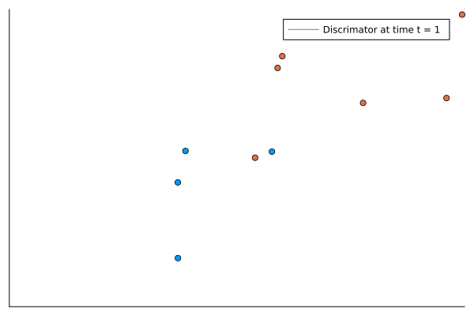

How brains process information.
Nicholas Gale & Stephen Eglen
Deep Learning is most often applied as a statistical model to understand data.
Deep Learning is a branch of theoretical neuroscience which aims to model brain function and development.
It is therefore useful to understand some modelling results from theoretical neuroscience.
The neurone is a highly complicated structure - even our best models are still reductions.
The oldest neuron models date to 1901.
They are almost all based on the law of conductance: \[ C\frac{dV}{dt} = I \]
Commonly classed as: integrate-and-fire, biophysical, hybrid, or stochastic.
The oldest form of neuron model.
Assume neuron conductance is \(g\): \[\frac{dv}{dt} = g I(t)\]
If \(I(t) = \sum_{t_i\in\text{spike times}} \delta(t - t_i)\) then this “integrates” the spikes into membrane voltage.
Once a threshold is reached, \(v\) is reset to a baseline.
A slightly more sophisticated model recognises that a neuron tends to “rest” at a baseline.
If it doesn’t fire its membrane voltage decays through ion channels diffusion.
To model this we assume a resting voltage of \(v_r\) and a differential equation: \[\frac{dv}{dt} = -g(v-v_r) + gI(t)\]
The Hodgkin-Huxley is a jewel of theoretical neuroscience (and modelling more generally).
It explicitly models Na and K ionic channels with condutances \(g_{Na}\) and \(g_{k}\) and a leaky channel \(g_L\).
It models the response of these channels to a membrane voltage through response variables: \(n,m,h\).
It does not require a “hard-reset” and is able to accurately predict neuron behaviour quantitatively.
The functions \(\alpha_j, \beta_j\) take the generic form: \[\frac{A_j (v - B_j)}{\exp\left(\frac{v-B_p}{C_p}\right) - D_p}\]
The parameters can be found by fitting to neural voltage data.
Membrane voltage of giant squid axon (top) against the model prediction (bottom)
A brief historical perspective: Hodgkin and Huxley: J Physiol. 2012 Jun 1; 590(Pt 11): 2571–2575.
The Hodgkin-Huxley model is accurate and has been extended for even more accuracy, but is expensive.
The integrate-and-fire models are cheap.
Hybrid models reduce the biophysical HH type models to blend efficiency and accuracy.
They usually consist of a voltage (v) and auxillary (u) variable. They can be useful in analtyical and computational frameworks.
The best in class is the Izhekivich model.
Izhekivich model spiking predictions compared to rat cortical neurons
Simple Model of Spiking Neurons IEEE Transactions on Neural Networks (2003) 14:1569-1572
All of the models presented can generate various classes of behaviour: quiet, single-spikes, periodic spikes.
Under constant current conditions periodic spiking can be described by the firing rate (Hz)
This is an important biological measurement and computational reduction.
A school of thought believes that the rate encodes the neurons computation: rate based computation.
There is evidence for this but it is simplistic. It does however form the basis of Deep Learning models.
The final class of model is a stochastic model.
It asserts that neuron spiking is distributed as a Poisson process parameterised by firing rate \(r\): \[X \sim \text{Poisson}(r)\]
A spike train is created by choosing a rate \(r\) and a time interval \(dt\).
At the \(N\)th time step (time \(t_0 + N dt\)) sample a uniform random number \(p\).
If \(p < r dt\) then record a spike.
This is the cheapest spiking model to implement.
The inhomogenous process process allows \(r = r(t)\) if the rate changes slowly. \[X\sim\text{Poisson}(r(t)\]
This process captures most statistical properties of real neurons.
Stochastic process are a cheap way to generate spike data.
A probabilistic intepretation leads us to relate rates/probabilities with membrane voltage
An activation function measures the “activity” of a neuron as a response to membrane voltage.
The most biologically accurate function is the sigmoid.
Let the maximum firing rate of a neurone be Q; its threshold be \(\theta\); and slope-response to voltage be \(\beta\)
The sigmoid function \(s\) is given by: \[ s(x; \beta, Q, \theta) = \frac{Q}{1 + \exp\left(-\frac{x-\theta}{\beta}\right)}\]
Other activation functions are commonly chosen.
These are less accurate but have nice mathematical/computational properties.
Tanh(x): a scaled sigmoid to be odd around the origin.
ramp(x): a computationally cheap approximation. Also called Rectified Linear Unit (relu)
Heaviside(x): a simple on/off intepretation that is useful in proofs.
We have built up a sophisticated repotoire of neuron activity models.
We would like to build them into something more useful.
To do this we incoporate them into a dynamical network model.
A network is simply a graph with nodes \(i \in 1:N\) and edges \(W_{ij}\).
A dynamical network model is composed of internal dynamics of the node and contributions from the edges.
It typically takes the form: \[\frac{dv_i}{dt} = f(v_i, t) + \sum_{j=1}{N} W_{ij} g(v_j, t) \]
A neural network model replaces \(f\) with the activation dynamics and \(W_{ij}\) with the contributions from other neurons.
\(W_{ij}\) have a physical intepretation: they are dendritic weights.
g represents some response function such as spiking.
This is the most general form of a neural network.
All of the above neurone models will be able to learn an input response.
The most common form is a linear response to weights passed through an some activation function.
The Hopfield Network is a seminal work in neural network theory.
It is a good statistical classifier.
It has a naturally intepretable structure.
It has a biologically derived learning rule and provides explanations for biological phenemona.
It therefore ticks all the boxes.
In the Hopfield model a pool of N cortical neurons are all connected to each other.
The neurons are indexed by \(i\) and the weights by \(W_{ij}\). The inputs are given to neurons as \(u_i^0 = I_i\).
The neurons state is evolved as \[u_i^{t+1} = \text{sign}(\sum_j W{ij} u_j^t)\]
The sign function classifies neurons as active/inactive and the state is evolved until it is steady.
The steady state can be compared to a hashing function to classify an input.
The Hopfield network uses the Hebb rule to train its weights.
The Hebb rules states: neurons that fire together wire together. This means coactive neurons strengthen; otherwise they decay.
To encode an input pattern \(v\) we take the autocovariance as the weight change i.e. the Hebb rule: \[ \Delta W_{ij} = v_i v_j \]
The autocovariance relationship ensures that the steady state of the pattern v is v itself.
To train M such patterns we simply take the mean of the linear combinations of the Hebb rule.
We also hash the patterns for classification later.
using Random
delW(v) = sign.(v) .* sign.(v)'
function constructW(data)
W = zeros(length(data[1]), length(data[1]))
for v in data
W .+= delW(v)
end
return W ./ length(data)
end
data = [sign.(rand([-0.2, 0.8], 784)) for i in 1:10]
labels = [randstring(10) for i in 1:10]
hash = Dict(zip(data, labels))
trained = constructW(data)The Hopfield network can then be used to query inputs and classify them.
We find we can delete substantial portions of vectors and still classify them correctly.
We can also classify vectors that are “similar”.
class_predict (generic function with 1 method)corrupt(c) = map(x -> (rand()>0.5) ? x : -sign(x) * rand(), c)
for i in data
pred = class_predict(trained, hash, corrupt(i))
cl = hash[i]
println((pred, cl, pred == cl))
end("YymwK37o47", "YymwK37o47", true)
("xK3METcXf9", "xK3METcXf9", true)
("ftvUZkPX8K", "ftvUZkPX8K", true)
("ik800EWTHL", "ik800EWTHL", true)
("OFHnZb78Ve", "OFHnZb78Ve", true)
("epXa3n7aTz", "epXa3n7aTz", true)
("lSdDkxvmHE", "lSdDkxvmHE", true)
("w9NnRXZpIH", "w9NnRXZpIH", true)
("KaNou4inn4", "KaNou4inn4", true)
("TJAKvM8wcx", "TJAKvM8wcx", true)The network is remarkably robust.
We can delete large swathes of parameters and it retains classification power.
h(x) = x .* (x > 0)
deletion_fraction = 0.5
stroke_trained = trained .* h.(rand(size(trained)...) .- deletion_fraction)
for i in data
pred = class_predict(stroke_trained, hash, corrupt(i))
cl = hash[i]
println((pred, cl, pred == cl))
end("YymwK37o47", "YymwK37o47", true)
("xK3METcXf9", "xK3METcXf9", true)
("ftvUZkPX8K", "ftvUZkPX8K", true)
("ik800EWTHL", "ik800EWTHL", true)
("OFHnZb78Ve", "OFHnZb78Ve", true)
("epXa3n7aTz", "epXa3n7aTz", true)
("lSdDkxvmHE", "lSdDkxvmHE", true)
("w9NnRXZpIH", "w9NnRXZpIH", true)
("KaNou4inn4", "KaNou4inn4", true)
("TJAKvM8wcx", "TJAKvM8wcx", true)Why not just build a network to store “all” patterns.
After a certain number of new patterns it begins to erase old patterns.
The network has a capacity limit.
This tendency to erase learned patterns is known as catastrophic forgetting.
The model constructs an energy function (Lypaunov) which the trained patterns are local minima.
They correspond to spin-glass states in an Ising model.
These local minima form attractive basins in the energy landscape.
Patterns that are “close” to trained patterns fall into these basins and return the trained states as output.
Network can be tricked by spurious patterns: combinations of trained states.
In addition to being an excellent classifier the Hopfield network allows us to make biological insights.
It validates the Hebb rule as a memory learning rule.
It offers an explanation for asscociative memory: things can “ring a bell”.
It allows us to understand the effects of partial recall and stroke.
It implies that there are limits to cortical memory.
The neural network dynamics on a single neurone with dendritic inputs \(W\), an activation function \(f\) and a resting potential \(b\) look like: \[y = f(W x + b)\]
This is called a perceptron and can be used to classify things in binary format using a threshold.
Multiple perceptrons can be encoded in a vector with a weight matrix and vector biases.
The perceptron model can be trained by a routine that moves inputs closer to their target.
This is also routed in the brain: attention signals can mediate desired outputs.
The routine for training a regressor \(x_t\) with ouput \(xi_t\) and target output \(y_t\) is: \[W_{ij}(t+1) = W_{ij}(t) + r (x_i - y_i) v_j\]
The learning rate is dictated by \(r\).
This is nothing more than minimising least-square-error on linear regressors
This is true for any activation function that is monotonic.
function train_epoch(domestic, wild, W, b, r, thresh)
# class 1
for i = 1:(length(domestic[1]) + length(wild[1]))
if i <= length(domestic[1])
datum = [domestic[1][i], domestic[2][i]]
else
datum = [wild[1][i], wild[2][i]]
end
pred = W * datum .+ b
err = (pred[1] > thresh)
W = W .- r .* err .* datum'
b = b .- r .* err
end
return W, b
endtrain_epoch (generic function with 1 method)
The perceptron model was very popular but it is not general.
It can only do linear regression, which is interesting, but not brain-like.
This was highlighted by the XOR problem: a perceptron model of the XOR gate.
XOR is given by: \[(00) \mapsto 0, (01) \mapsto 1, (10) \mapsto 1, (11) \mapsto 0\]
To solve the XOR problem we need to augment the perceptron.
We do this by having two layers of perceptrons and feed the output of one into the other.
We need the activation function to be non-linear (otherwise it will reduce to a single perceptron layer).
This is no longer performs linear regression.
When multiple layers of perceptrons are chained together they are called: multi-layer perceptrons (MLPs).
These are the most general form of artificial neural networks (ANNs).
They can be used to model any function and are thus universal models.
When they have many layers they are considered “deep” thus the name Deep Learning.
We need a way to teach them.
Biological models of neurons exist from highly realistic and expensive, to cheap but less accurate.
Neurons can be modelled as a network and this can perform any function (with training).
The Hopfield network is a simple setup with a biological training rule that explains much of brain function.
The perceptron is an easy to train biologically inspired linear regression model.
The multi-layer perceptron is an all-purpose statistical model.